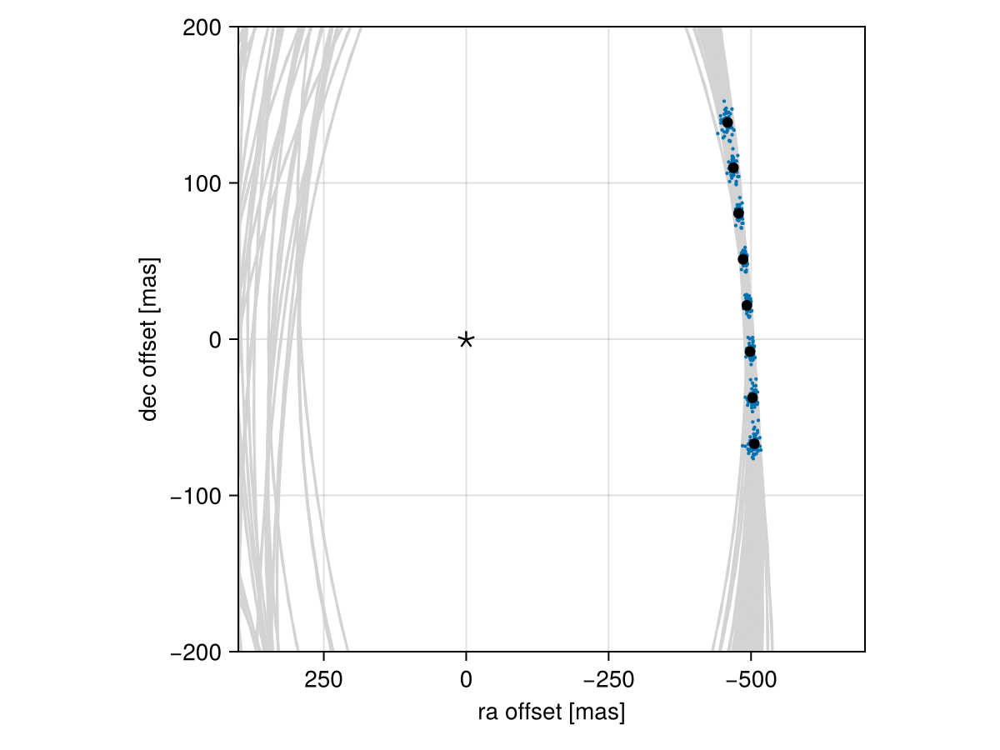

Posterior Predictive Checks
A posterior predictive check compares our true data with simulated data drawn from the posterior. This allows us to evaluate if the model is able to reproduce our observations appropriately. Samples drawn from the posterior predictive distribution should match the locations of the original data.
To demonstrate, we will fit a model to relative astrometry data:
using Octofitter
using Distributions
astrom_like = PlanetRelAstromLikelihood(Table(;
epoch= [50000,50120,50240,50360,50480,50600,50720,50840,],
ra = [-505.764,-502.57,-498.209,-492.678,-485.977,-478.11,-469.08,-458.896,],
dec = [-66.9298,-37.4722,-7.92755,21.6356, 51.1472, 80.5359, 109.729, 138.651,],
σ_ra = fill(10.0, 8),
σ_dec = fill(10.0, 8),
cor = fill(0.0, 8)
))
@planet b Visual{KepOrbit} begin
a ~ truncated(Normal(10, 4), lower=0, upper=100)
e ~ Uniform(0.0, 0.5)
i ~ Sine()
ω ~ UniformCircular()
Ω ~ UniformCircular()
θ ~ UniformCircular()
tp = θ_at_epoch_to_tperi(system,b,50420) # reference epoch for θ. Choose an MJD date near your data.
end astrom_like
@system Tutoria begin
M ~ truncated(Normal(1.2, 0.1), lower=0)
plx ~ truncated(Normal(50.0, 0.02), lower=0)
end b
model = Octofitter.LogDensityModel(Tutoria)
using Random
Random.seed!(0)
chain = octofit(model)Chains MCMC chain (1000×28×1 Array{Float64, 3}):
Iterations = 1:1:1000
Number of chains = 1
Samples per chain = 1000
Wall duration = 3.71 seconds
Compute duration = 3.71 seconds
parameters = M, plx, b_a, b_e, b_i, b_ωy, b_ωx, b_Ωy, b_Ωx, b_θy, b_θx, b_ω, b_Ω, b_θ, b_tp
internals = n_steps, is_accept, acceptance_rate, hamiltonian_energy, hamiltonian_energy_error, max_hamiltonian_energy_error, tree_depth, numerical_error, step_size, nom_step_size, is_adapt, loglike, logpost, tree_depth, numerical_error
Summary Statistics
parameters mean std mcse ess_bulk ess_tail r ⋯
Symbol Float64 Float64 Float64 Float64 Float64 Floa ⋯
M 1.1942 0.0973 0.0038 671.6787 542.6346 1.0 ⋯
plx 49.9995 0.0193 0.0006 1192.7039 622.0888 0.9 ⋯
b_a 11.8992 2.4587 0.1858 172.0594 302.7474 0.9 ⋯
b_e 0.1703 0.1189 0.0061 383.4743 318.4195 1.0 ⋯
b_i 0.6453 0.1623 0.0122 186.3574 180.1830 1.0 ⋯
b_ωy 0.0126 0.7313 0.0625 176.8447 711.1137 1.0 ⋯
b_ωx 0.0199 0.6866 0.0687 157.2487 693.9829 1.0 ⋯
b_Ωy -0.0233 0.7648 0.1485 29.1064 468.7166 1.0 ⋯
b_Ωx -0.0171 0.6631 0.0809 80.6908 368.9202 1.0 ⋯
b_θy 0.0751 0.0101 0.0004 801.0765 619.7583 1.0 ⋯
b_θx -1.0087 0.1010 0.0036 799.2747 622.4882 1.0 ⋯
b_ω -0.1872 1.8009 0.2447 93.6847 525.4372 1.0 ⋯
b_Ω -0.5587 1.7943 0.2006 110.0858 391.4192 1.0 ⋯
b_θ -1.4964 0.0075 0.0003 698.0062 489.0379 1.0 ⋯
b_tp 42867.7425 5051.7229 285.9618 309.8026 511.5483 1.0 ⋯
2 columns omitted
Quantiles
parameters 2.5% 25.0% 50.0% 75.0% 97.5%
Symbol Float64 Float64 Float64 Float64 Float64
M 1.0029 1.1306 1.1959 1.2589 1.3933
plx 49.9613 49.9873 49.9992 50.0120 50.0370
b_a 8.1017 10.0837 11.5124 13.3766 17.3309
b_e 0.0068 0.0690 0.1568 0.2526 0.4231
b_i 0.2895 0.5647 0.6681 0.7560 0.9148
b_ωy -1.0781 -0.7119 0.0511 0.7375 1.0535
b_ωx -1.0447 -0.6476 0.0284 0.6845 1.0657
b_Ωy -1.0721 -0.8240 -0.0324 0.7627 1.0767
b_Ωx -1.0679 -0.5565 -0.1198 0.5624 1.0662
b_θy 0.0570 0.0676 0.0751 0.0816 0.0964
b_θx -1.2191 -1.0736 -1.0014 -0.9378 -0.8313
b_ω -3.0049 -1.9786 0.0462 1.1611 2.9499
b_Ω -3.0029 -2.4735 -0.3155 0.8563 2.9206
b_θ -1.5115 -1.5016 -1.4966 -1.4914 -1.4815
b_tp 30804.2568 39888.0535 43923.4115 46627.4003 49929.7992
We now have our posterior as approximated by the MCMC chain. Convert these posterior samples into orbit objects:
# Instead of creating orbit objects for all rows in the chain, just pick
# every twentieth row.
ii = 1:20:1000
orbits = Octofitter.construct_elements(chain, :b, ii)50-element Vector{Visual{KepOrbit{Float64}, Float64}}:
Visual{KepOrbit{Float64}, Float64}(KepOrbit(10.6, 0.189, 0.54, 0.818, 6.04, 41600.0, 1.04), 49.97345080142782, 4.127491631898806e6)
Visual{KepOrbit{Float64}, Float64}(KepOrbit(14.3, 0.0674, 0.78, 1.79, 3.53, 33500.0, 1.2), 50.01256449743958, 4.124263614007633e6)
Visual{KepOrbit{Float64}, Float64}(KepOrbit(15.7, 0.417, 0.79, -2.78, 2.85, 32100.0, 1.16), 50.00749391731608, 4.124681799512786e6)
Visual{KepOrbit{Float64}, Float64}(KepOrbit(11.9, 0.0817, 0.662, -0.34, 3.74, 47500.0, 1.19), 50.01477094625564, 4.124081668226495e6)
Visual{KepOrbit{Float64}, Float64}(KepOrbit(10.5, 0.0177, 0.585, -1.94, 1.17, 39900.0, 1.13), 50.02101087072413, 4.1235672052505645e6)
Visual{KepOrbit{Float64}, Float64}(KepOrbit(13.6, 0.208, 0.684, -2.73, 1.05, 49800.0, 0.966), 50.008555040042005, 4.124594278615788e6)
Visual{KepOrbit{Float64}, Float64}(KepOrbit(10.5, 0.295, 0.714, -1.81, 2.06, 41600.0, 1.28), 50.00404943416991, 4.1249659244407173e6)
Visual{KepOrbit{Float64}, Float64}(KepOrbit(15.3, 0.166, 0.721, 1.16, 3.55, 50000.0, 1.09), 49.98799468994565, 4.1262907479960816e6)
Visual{KepOrbit{Float64}, Float64}(KepOrbit(13.5, 0.345, 0.626, -2.97, 3.08, 36000.0, 1.12), 50.0059691316791, 4.1248075696093207e6)
Visual{KepOrbit{Float64}, Float64}(KepOrbit(10.8, 0.0861, 0.553, -2.17, 1.28, 39100.0, 1.12), 50.01447663616376, 4.124105936377166e6)
⋮
Visual{KepOrbit{Float64}, Float64}(KepOrbit(9.1, 0.291, 0.498, 1.72, 5.25, 44300.0, 1.42), 50.020072257339294, 4.123644582895127e6)
Visual{KepOrbit{Float64}, Float64}(KepOrbit(8.22, 0.262, 0.323, -2.47, 3.87, 46000.0, 1.25), 49.98101675200517, 4.1268668267282685e6)
Visual{KepOrbit{Float64}, Float64}(KepOrbit(12.5, 0.222, 0.708, 0.626, 4.74, 36500.0, 1.19), 50.003041132437986, 4.125049103587256e6)
Visual{KepOrbit{Float64}, Float64}(KepOrbit(8.42, 0.173, 0.262, -0.3, 1.87, 46100.0, 1.17), 50.01013811447784, 4.124463714294096e6)
Visual{KepOrbit{Float64}, Float64}(KepOrbit(9.09, 0.264, 0.614, 0.981, 0.631, 45700.0, 1.26), 49.99381516421049, 4.1258103491901685e6)
Visual{KepOrbit{Float64}, Float64}(KepOrbit(10.4, 0.104, 0.572, 0.913, 0.487, 44200.0, 1.22), 49.993368348264895, 4.125847223637989e6)
Visual{KepOrbit{Float64}, Float64}(KepOrbit(14.6, 0.215, 0.835, -0.0378, 3.98, 48400.0, 1.21), 49.99771894132898, 4.1254882096130545e6)
Visual{KepOrbit{Float64}, Float64}(KepOrbit(8.83, 0.239, 0.29, 1.59, 5.55, 44200.0, 1.09), 49.96892620163997, 4.1278653691227497e6)
Visual{KepOrbit{Float64}, Float64}(KepOrbit(14.4, 0.0081, 0.835, -0.97, 3.49, 43700.0, 1.21), 49.98454299586395, 4.126575689950146e6)Calculate and plot the location the planet would be at each observation epoch:
using CairoMakie
epochs = astrom_like.table.epoch' # transpose
x = raoff.(orbits, epochs)[:]
y = decoff.(orbits, epochs)[:]
fig = Figure()
ax = Axis(
fig[1,1], xlabel="ra offset [mas]", ylabel="dec offset [mas]",
xreversed=true,
aspect=1
)
for orbit in orbits
Makie.lines!(ax, orbit, color=:lightgrey)
end
Makie.scatter!(
ax,
x, y,
markersize=3,
)
fig
Makie.scatter!(ax, astrom_like.table.ra, astrom_like.table.dec,color=:black, label="observed")
Makie.scatter!(ax, [0],[0], marker='⋆', color=:black, markersize=20,label="")
Makie.xlims!(400,-700)
Makie.ylims!(-200,200)
fig
Looks like a great match to the data! Notice how the uncertainty around the middle point is lower than the ends. That's because the orbit's posterior location at that epoch is also constrained by the surrounding data points. We can know the location of the planet in hindsight better than we could measure it!
You can follow this same procedure for any kind of data modelled with Octofitter.